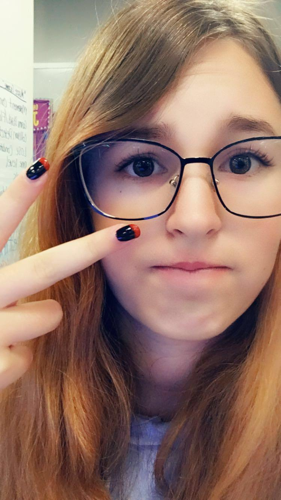
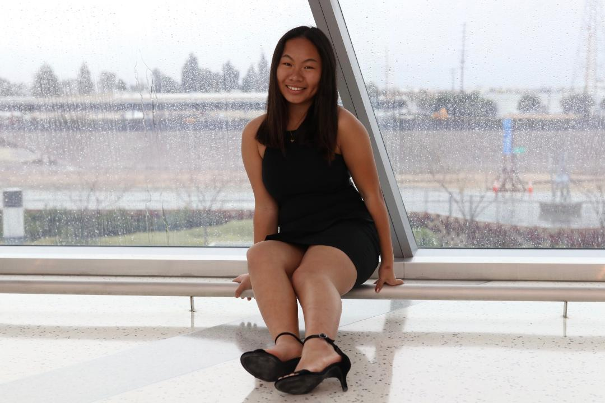

About Us
Panarai Gatenil:

I am 15-years-old, and I live in Arleta. I currently go to John H. Francis Polytechnic High School in Sun Valley. I enjoy running which is why I ran the LA marathon of 2018 and joined my school's track and field team. On the track and field team, I run the relays, run the 100, and do long jump. On the weekends, I volunteer at Discovery Cube LA and my temple. One of my pet peeves is when people do not recycle bottles and cans, which is why I have decided to use the environment for the theme of this project. You can contact me at: " panaraipg@gmail.com"
Orla Giffen:

I am 17 years old, and I live in Sunny Southern California. I attend Burroughs High School, and I hope to get into a stem career after college. I enjoy playing sports, especially soccer, and I play the oboe for my high school band. In my free time, I volunteer through the organization National Charity League. I also love to read and listen to music. You can contact me at "Orlagiffen@yahoo.com".
Ashlyn Gunter:

I am 15 year old and I am the youngest in this program. My family is very complicated, I have 2 half sisters, 1 full-blooded sister, and 2 half brothers. I live with my mother and I see my father alomst every weekend. My favorite subject in school is math. I love watching tv, drawing, even though I am not that good at it, and hanging out with friends. My favorite color is black, even though it is not technically a color. I go to Golden Valley High School in Santa Clarita. I have my own room at my mom's house. You can contact me at "Ashlyngunter@yahoo.com".
Bernette Xiao:

I am 17 years old; my family consists of my dad, my mom, and my dog, Leo! I like watching TV, doing water sports, and getting food with friends. I go to Whitney High School in Cerritos. Feel free to contact me at "Bernettexiao1@gmail.com".